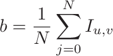
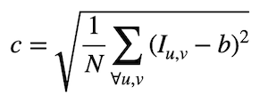
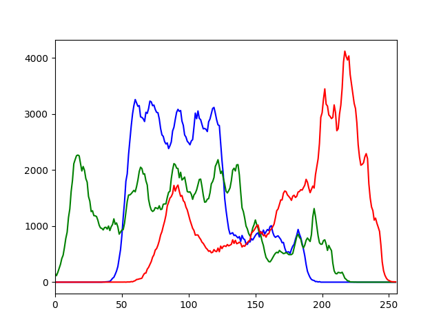

Tema 2- Imagen digital y vídeo¶
En este tema trabajaremos con cambios de resolución de imágenes, histogramas, brillo/contraste y conversión entre espacios de color.
Cambios de resolución espacial y radiométrica¶
En OpenCV podemos cambiar la resolución espacial (es decir, el tamaño de la imagen) con la función resize:
# Guardamos la imagen img en dst con el 75% de su tamaño original
dst = cv.resize(img, (0,0), fx=0.75, fy=0.75)
# Guardamos la imagen en destino con un tamaño de 640 x 480 (ancho x alto)
dst = cv.resize(img, (640,480))
Para cambiar sólo el tipo de dato de la imagen, que está relacionado con la resolución radiométrica o depth (el número de bits usados para representar el valor de un píxel), podemos realizar una conversión con numpy:
converted = np.float32(img) # Convertir a float y guardar en dst
Brillo/contraste¶
Tal como puedes ver en las transparencias de teoría, el brillo y contraste de una imagen se definen con las siguientes ecuaciones:


Ejercicio¶
Implementa un programa en OpenCV llamado bc.py que reciba por parámetro el nombre de una imagen (que debemos cargar en escala de grises) y muestre por el terminal su brillo y contraste. Los parámetros de entrada deben indicarse de la siguiente forma:
parser = argparse.ArgumentParser(description = 'Programa para obtener tanto el brillo como el contraste de una imagen.')
parser.add_argument('--imagen', '-i', type=str, default='lena.jpg')
Ejemplo de ejecución:
python bc.py
b= 120.444
c= 48.221
Importante: Como la corrección de prácticas es automática, la salida del programa debe tener exactamente el formato que se indica, por lo que la última línea del código debería ser como la siguiente:
print('b= %.3f' % brillo)
print('c= %.3f' % contraste)
Las variables brillo y contraste son los valores que debes calcular usando las ecuaciones anteriores.
Histogramas¶
Podemos calcular el histograma de una imagen con la función calcHist. Esta función recibe muchos parámetros porque está pensada para calcular de una pasada todos los histogramas de un array de imágenes.
Parámetros de calcHist:
images: Array de imágenes, deben tener la misma resolución, tipo y el mismo tamaño, aunque pueden tener un número distinto de canales. Tiene que indicarse entre corchetes, por ejemplo[img].channels: También se da entre corchetes. Es la lista de los canales usados para calcular el histograma, comenzando por el número de canal 0. Si es escala de grises se puede indicar[0], y en color[0],[1]o[2]para calcular los histogramas de azul, verde y rojo respectivamente.mask: Matriz opcional para usar una máscara binaria. Para obtener el histograma de la imagen completa se poneNone.histSize: Representa cuántos elementos tenemos en el vector del histograma y se pone entre corchetes, normalmente serán[256].ranges: Rango de los valores mínimos y máximos para cada imagen, normalmente es[0,256].
Veamos un ejemplo de código que calcula el histograma de una imagen en escala de grises, lo muestra por el terminal y crea una gráfica en una ventana:
import cv2 as cv
import argparse
from matplotlib import pyplot as plt
parser = argparse.ArgumentParser(description = 'Programa para obtener el histograma de una imagen.')
parser.add_argument('--imagen', '-i', type=str, default='lena.jpg')
parser.add_argument('--histograma', '-o', type=str, default='histograma.png')
args = parser.parse_args()
# Leemos la imagen indicada por el usuario
img = cv.imread(args.imagen,cv.IMREAD_GRAYSCALE)
# Comprobamos la lectura de la imagen
if img is None:
print("Error al leer la imagen ", args.imagen)
quit()
# Obtenemos el histograma
hist = cv.calcHist([img],[0],None,[256],[0,256])
# Lo mostramos usando la librería matplotlib
plt.plot(hist, 'b') # El segundo parámetro es el color de la línea ('b', 'g', o 'r')
plt.xlim([0,256]) # Para ajustar mejor el eje x y que sólo se vean los valores en el rango [0,255].
# Volcamos el resultado en un archivo
plt.savefig(args.histograma)
# Mostramos el resultado por pantalla
plt.show()
Ejercicio¶
Cuando la imagen es de tres canales, lo más normal es mostrar un histograma para cada uno de ellos. Haz una copia del programa anterior y llámalo histogramaColor.py. Modifícalo para que en este caso el programa muestre en una ventana (y guarde en una imagen) el histograma de sus tres colores básicos, en lugar de hacerlo en escala de grises.
Ejemplo de salida con lena.jpg:

Conversión de espacios de color¶
OpenCV soporta más de 150 espacios de color. La función que realiza las conversiones entre ellos es cvtColor, y admite hasta 4 parámetros:
src: Imagen de entradacode: Código de conversión del espacio de color. Su estructura esCOLOR_SPACEsrc2SPACEdst. Ejemplos:COLOR_BGR2GRAY,COLOR_YCrCb2BGR.dst(opcional): Imagen de salida con el mismo tamaño y resolución (depth) que la imagen de entrada.dstCn(opcional): El número de canales en la imagen destino. Si se omite el parámetro, se infiere del número de canales de la imagensrcy decode.
Ejemplo de uso:
grayImg = cv.cvtColor(img, cv.COLOR_BGR2GRAY)
Importante: La función
cvtColorsólo convierte de BGR a otro espacio de color o viceversa, por lo que si queremos convertir una imagen entre dos espacios distintos de BGR, primero tenemos que pasarla a BGR y después al espacio destino.
Ejemplos de conversión:
converted = cv.cvtColor(img, cv.COLOR_BGR2GRAY) # Convertir a escala de grises
converted = cv.cvtColor(img, cv.COLOR_BGR2Luv) # Convertir a LUV
converted = cv.cvtColor(img, cv.COLOR_BGR2XYZ) # Convertir a CIEXYZ
Puedes consultar en este enlace todas las ecuaciones que usa OpenCV para conversión entre espacios. Por ejemplo, para convertir un valor RGB en escala de grises se usa la siguiente fórmula: 0.299*R + 0.587*G+ 0.114*B.
Ten en cuenta que OpenCV a veces no usa el mismo orden de canales que el estándar del espacio de color. Por ejemplo, RGB se codifica en OpenCV como BGR, y HSL se codifica como HLS, por lo que el último canal que almacena en este caso es S en lugar de L.
Ejercicio¶
Haz un programa llamado colorLight.py que reciba por parámetro el nombre de una imagen y extraiga los canales que se muestran a continuación, guardándolos exactamente con el siguiente nombre de fichero:
- El canal L de CIELab, fichero
cielab_l.jpg. - El canal V de HSV, fichero
hsv_v.jpg. - El canal L de HSL, fichero
hsl_l.jpg. - El canal Y de YCrCb, fichero
ycrcb_y.jpg.
Argumentos de entrada:
parser = argparse.ArgumentParser(description='Programa para cambiar entre espacios de color de una imagen.')
parser.add_argument('--imagen', '-i', type=str, default = 'Fire_breathing_2_Luc_Viatour.jpg')
Para hacer pruebas puedes usar la siguiente imagen:

Imagen de Luc Viatour, CC BY-SA 3.0, Wikimedia.
Pista: Se puede usar el método
splitpara separar los canales de una imagen. Ejemplo:Alternativamente, también se puede usarb,g,r = cv.split(img)numpypara obtener el canal que nos interese:b = img[:,:,0] # Canal azul g = img[:,:,1] # Canal verde r = img[:,:,2] # Canal rojo
Pseudocolor¶
Mediante la función applyColorMap también podemos pseudocolorear imágenes en escala de grises usando los mapas de color predefinidos en OpenCV. Por ejemplo:
img = cv.imread('pluto.jpg', cv.IMREAD_GRAYSCALE)
imgray = cv.applyColorMap(img, cv.COLORMAP_JET)
Escribe un programa completo (no hay que entregarlo) que contenga este código de ejemplo para visualizar el resultado de pseudocolorear la siguiente imagen de Plutón obtenida por la sonda New Horizons: